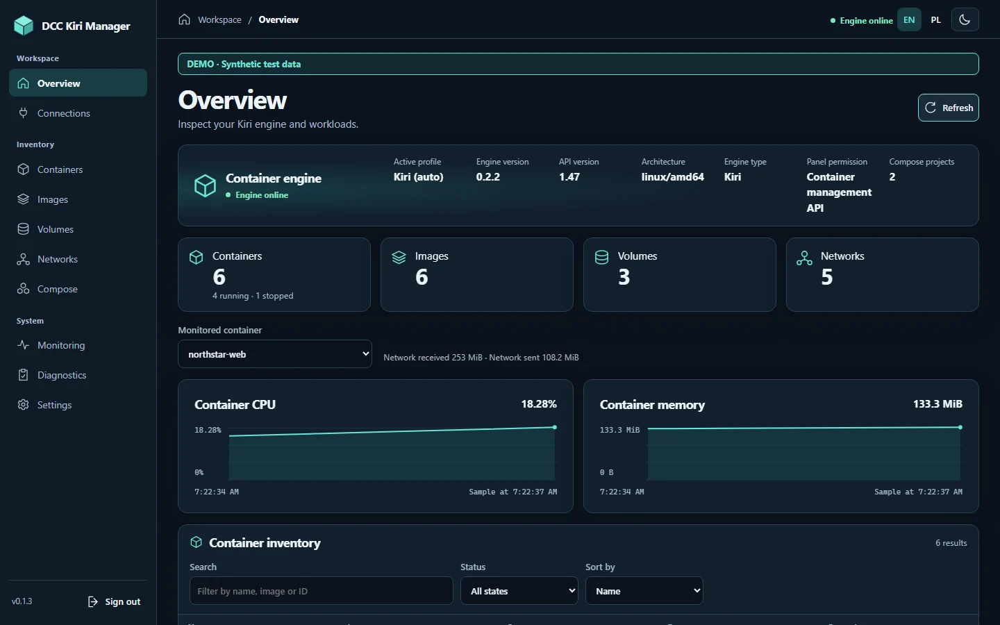

Docker Compose
Run the panel with a named volume and a loopback port. Use the socket overlay on a compatible Linux host.
See what’s running on Kiri.
Inspect containers, images, volumes, networks and Compose projects from one lightweight dashboard.

Independent, read-only workspace for Kiri containers, Compose and local workloads.
The runtime starts the panel. An approved Unix socket connects the panel to Kiri.
Each capture shows the running panel with synthetic test data marked DEMO.
Start the panel locally. The wizard guides setup of Kiri and the approved socket.
Run the panel with a named volume and a loopback port. Use the socket overlay on a compatible Linux host.
Use the Docker-compatible CLI with the Kiri context. Socket mounting depends on the host.
Find DCC Kiri Manager in the DCC category. Open the local address shown after installation.
On an unconfigured local panel, sign in with admin / admin. The startup log shows the same temporary credentials. Choose a new password before entering the panel. You can change the username in the same form.
Expand the help on the sign-in screen for terminal setup or recovery. Terminal setup and password reset ↗
Linux amd64 and arm64, Windows/WSL2, macOS and Raspberry Pi OS. Runtime and Kiri connectivity are checked separately.
Official Kiri downloads ↗Local administrator sessions, CSRF protection and an approved socket list. A mounted socket carries engine-level authority. Use HTTPS outside loopback.
Documentation ↗Panel 0.1.0 passed integration with Kiri Lite 0.2.2 on Ubuntu 24.04.5 LTS for amd64 and arm64. GitHub Actions results ↗
| Host | Architecture | Panel runtime | Kiri connection | Status |
|---|---|---|---|---|
| Windows 10/11 | amd64 | Docker Desktop | Cross-VM socket unavailable | Unsupported |
| Windows 10/11 | amd64 | Kiri / WSL2 | Same WSL distribution | Not verified |
| Ubuntu 24.04.5 LTS | amd64 | Docker | Dedicated Unix socket | Supported |
| Ubuntu 24.04.5 LTS | amd64 | Kiri | Dedicated Unix socket | Supported |
| Ubuntu 24.04.5 LTS | arm64 | Docker | Dedicated Unix socket | Supported |
| Ubuntu 24.04.5 LTS | arm64 | Kiri | Dedicated Unix socket | Supported |
| Debian | amd64 | Docker | Dedicated Unix socket | Not verified |
| Debian | amd64 | Kiri | Dedicated Unix socket | Not verified |
| Debian | arm64 | Docker | Dedicated Unix socket | Not verified |
| Debian | arm64 | Kiri | Dedicated Unix socket | Not verified |
| Raspberry Pi OS | arm64 | Docker | Dedicated Unix socket | Not verified |
| Raspberry Pi OS | arm64 | Kiri | Dedicated Unix socket | Not verified |
| macOS Intel | amd64 | Docker Desktop | Cross-VM socket unavailable | Unsupported |
| macOS Intel | amd64 | Kiri | Cross-VM socket unavailable | Unsupported |
| macOS Apple Silicon | arm64 | Docker Desktop | Cross-VM socket unavailable | Unsupported |
| macOS Apple Silicon | arm64 | Kiri | Cross-VM socket unavailable | Unsupported |
Future releases may add scoped engine writes and more connection paths. Migration depends on isolated copy and rollback tests.
Install, configure and troubleshoot.
GitHub release and OCI image.
GHCR ↗MIT-licensed DCC project by hattimon.
Support the author and DCC projects.